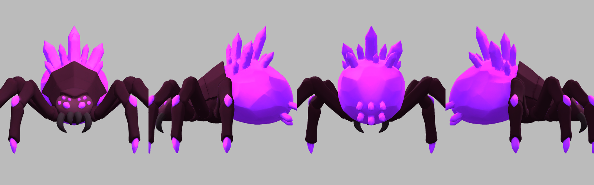

Your export of the Heart's third boss, the one that comes in Level IV once the Hollow Cantor and the Geode Colossus have fallen, with a skeleton and 12 moves added by hand. She walks on eight locked feet in two sets of four, as the game's rig walks her, and casts her binding thread from the spinnerets at the tip of her abdomen, over her back and down the lane. The veins over her abdomen beat with her heart. Her timings are the game's. Pick a move, drag to turn her, and judge the weight and the hit. Nothing in the game has changed.
Eight legs, not six. Your export has six legs. The game's Vein Weaver has eight, so I copied her back pair, turned each copy 48 degrees further back and set it in the gap behind, as I proposed. If you would rather have six, or re-export her from Tripo with eight, say so and I will rig that instead.
Idle or Walk sets what she does between attacks, and Going turns her on the spot. An Action plays over it and repeats until you press it again. Hurt plays on top of anything. Death holds her down: press it again and she spawns back in. The bar names the part of the move that is playing, in the game's own words. Enraged is her state under 40 percent health: the veins burn, the heart beats faster and the crystals on her legs light. It stays on over every move until you switch it off; the Enrage action switches it on.

It came through whole, in one piece: the dark crimson body, the violet abdomen with its veins and crystal spires, the cluster of violet eyes, two hooked fangs, the spinnerets at the tail, and six legs with a violet crystal at each knee and each tip. She stands exactly on the floor and her face points straight ahead, so nothing was corrected. The one change is the added back pair of legs.
| Move | What it does | Timing |
|---|---|---|
| Idle | She breathes through the abdomen, which swells with each heartbeat, sways a little on her legs and works her fangs. The front legs lift and tap the floor in turn, tasting the threads. | 4 s loop |
| Walk | An alternating tetrapod, as the game's rig walks her: four legs step together (left 1, right 2, left 3, right 4) while the other four hold, then they swap. The body glides level with a small bob on each set, and the abdomen swings a little against it. | Game: 1.25 u/s. One stride of 0.5 u every 0.4 s. |
| Turn left, turn right | Turns on the spot in the same two sets of four, the head leading and the abdomen trailing. | Mine: 90 degrees a second. The game turns her to her target at once. |
| Bind | While the lane fills she draws back off it, tips her abdomen up so the spinnerets point over her back, and lifts her two front legs. On the beat the front legs whip down, she lunges, and the thread shoots from the spinnerets over her head and down the lane. A hero it catches is bound: a ring of thread round them. She hauls the thread in hand over hand, her front legs reaching and pulling in turn, and the hero is dragged in to the end of the leash. Then she settles. | Game: Ember lane 0.9 u wide and up to 8 u long for 44 ticks; 9 damage; bound 2.5 s on a 3.6 u leash (3.0 enraged). Cast 2.5 frames, held 3 frames, haul 0.45 s (the game's draw), settle. Here the hero stands 6 u away. |
| Heartbeat Slam | She rears up on her back legs with the front four raised and her fangs spread, while the ring fills and the veins brighten. On the beat she drops and slams the front four down wide, the heart beats, the ring bursts and four vein patches spread out round her. She steps her front legs back in one by one. | Game: Ember ring of radius 2.8 u round herself for 60 ticks; 18 damage; four vein patches on a 2.1 u ring, radius 0.7 u, 4 s, 40 percent slow. Slam 2.5 frames, held 3 frames, settle. Here the hero stands 2.2 u away. |
| Brood Sacs | Unwarned: the abdomen swells and lifts as she loads it, a heave, and she flicks it up over her back and dips her head. Three egg sacs fly from the spinnerets, one onto the hero and one to either side, each falling into its Ember ring and bursting into a web. | Game: no warning; the game's rig loads it over the last 30 ticks, heaves 1.5 frames, throws 2.5 frames. Then three Ember rings of radius 1.1 u for 64 ticks, on the hero and 2.2 u to either side; 10 damage; webs 4 s, 50 percent slow. |
| Enrage | She rears and drums the air with her front legs, left, right, left, right, her fangs clattering and the abdomen shaking, then slams down. The Enraged state stays on after it. | Mine: 2 s. The game has no pose for it: the veins burn and the heart quickens. |
| Hurt | The head is knocked aside, the fangs flare and the abdomen jolts. Plays on top of any move. | 0.42 s |
| Heavy hit | Shoved back 0.3 u: the head snaps aside, the body is thrown back, and she scrambles back on all eight legs in two quick sets, braces with her fangs spread and squares up. | 1.1 s |
| Spawn | She grows out of the floor curled up with her legs folded under her. The legs unfold and plant one after another, she rises, rears with her front legs up and slams them down once. | Game: grow in 7 frames. The unfold and the slam are mine. |
| Death | The veins go dark. A jolt rears her up with her front legs thrown up, she lurches to one side, her legs give one after another and she drops onto her belly. Then all eight legs curl in under her, the way a dead spider's do, and the abdomen sags. | 2.8 s, then she stays down |
A checker takes every point of the model (17,778 of them) through every frame of every move (1,075 frames) and looks for five things. Sizes are in u; she is 1.7 u tall.
| Checked | Found in the first build | Now |
|---|---|---|
| A joint that jumps in one frame (a pop) | Hauling the thread in the Bind, the right front leg jumped 47 degrees as its haul started and again as it went back to the floor. | Only on the strike, where the move is meant to be fast: the front legs and the back shins turn 11 to 43 degrees in the frame the Heartbeat Slam, the Enrage and the Spawn come down. Elsewhere nothing over 10 degrees. |
| Any part under the floor | In five moves (the Heartbeat Slam, the Enrage, the heavy hit, the Spawn and the Death) the whole body sank out of sight, down to 12 u under the floor: the legs could not reach, and lowering a spider whose hips sit level with her ankles only puts the feet further out. In the Bind and the Brood Sacs the abdomen dipped 0.23 u into the floor, because it was tipped the wrong way. | Only the fangs, by 0.03 u, for one frame as she drops onto her belly in the death. The body never drops to reach a foot now; each pose is set so all eight feet reach, and the abdomen tips up. |
| One part pushed through another | In both turns the front legs crossed into the middle legs, up to 0.06 u. In the Spawn the folded back legs went 0.04 u into the abdomen. In the death the third and fourth legs curled into each other, 0.08 u. | The turns step faster with shorter sweeps, and the folded back legs tuck out from under the abdomen, so both are clean. In the death the third and fourth legs still touch, up to 0.08 u at the knees, as all eight curl in. |
| Skin torn or pulled (a seam that opens) | The waist between the body and the abdomen stretched to 6 times its size as she flicked the abdomen over her back in the Brood Sacs and swelled it in the Heartbeat Slam. | The flick is smaller (35 degrees) and the swell is about half, so the waist holds. The checker still names one sliver of skin at the top of the right front leg (0.3 mm across as modelled) that grows to 13 mm when the leg lifts; it cannot be seen. |
| Smoothness (a move that stops dead, a loop that jumps) | The walk took one frame further than the front legs reach and the leg snapped back. | None. Every move eases in and out, and the loops meet themselves. |
| What was measured, on every frame of every move | Result |
|---|---|
| Planted feet | 0 mm of sliding on any planted foot, in any move. A foot raised in the air falls short of where it is aimed by up to 0.07 u in the Heartbeat Slam's rear, where the leg is at full stretch. |
| Loops that jump when they restart (idle, walk, both turns) | 0 degrees. |
| Head facing straight | Straight on the model: the eyes and fangs mirror each other about the middle line, so nothing was corrected. |
| Hard parts | The crystal spires ride the abdomen, the leg crystals ride their own segment and the fangs are rigid, so no crystal bends. The bend is at the hips, knees and ankles of each leg, the waist and the neck. |
| Feet | The legs keep the model's spread. A spider's legs splay by nature, so the no-splay rule for humanoids does not apply. |
These numbers come from the model file. I checked the poses as still frames only: the cloud machine cannot play the page at full speed, so the weight, the timing and the hit are yours to judge.